Zoho CRM: a vállalati ügyfélnyilvántartásod
Ingyenes CRM-fiókot hozol létre EU-s adatközponttal, megismered a moduljait, és felveszed az első rekordot.
- lesz saját Zoho CRM-fiókod (ingyenes kiadás), EU-s adatközponttal;
- megismered az érdeklődő (lead), a kapcsolattartó (contact), az ügyfél (account) és az értékesítési lehetőség (deal) fogalmát;
- létrehoztad kézzel az első lead-rekordodat.
Mi az a CRM, egy mondatban?
A CRM (Customer Relationship Management) a vállalat ügyfélkapcsolati nyilvántartása: itt tartják nyilván az érdeklődőket, az ügyfeleket, az ajánlatokat és az üzletkötéseket. A legtöbb cégnél központi rendszer: az automatizálások jellemzően ebből olvasnak, és ebbe írnak; ezért a félévben többször visszatérünk hozzá. Ma a kézi adatbevitelt használod majd, a harmadik napon API-n keresztül viszünk be adatokat, a hatodik napon a tömeges adatbetöltést nézzük meg, míg a nyolcadik napon robottal módosítjuk a CRM tartalmát.
A regisztrációnál ellenőrizd az EU data center jelzést. A kurzus API-példái az EU-s címeket használják: accounts.zoho.eu és www.zohoapis.eu. Más adatközpontban létrehozott fiókhoz a későbbi példák címeit is hozzá kell igazítani. Az első belépés után a crm.zoho.eu címet ellenőrizd.
- Nyisd meg a Zoho CRM regisztrációs oldalát. Az űrlap alatt ellenőrizd: Your data will be stored in the EU data center. A helyzeted alapján rendszerint az EU-t ajánlja fel, de regisztráció előtt olvasd el a jelzést.
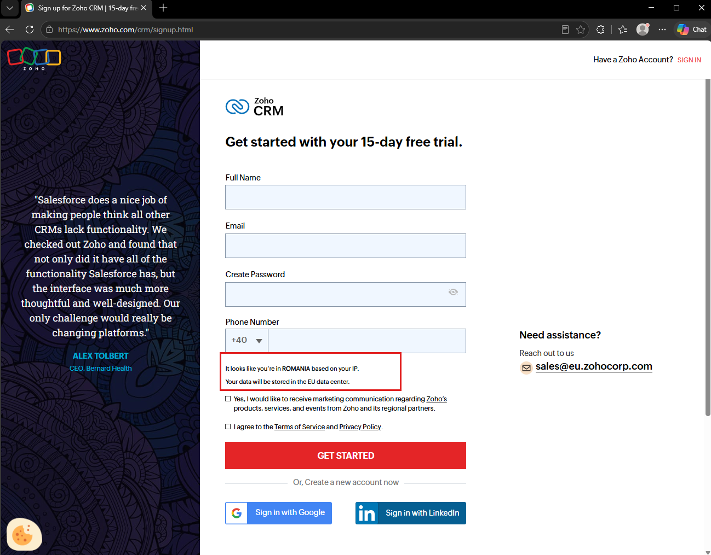
Az űrlap alján keresd az adatközpont jelzését vagy a választási lehetőséget. Ha nem EU-t ajánl fel, még a regisztráció előtt módosítsd; ha nem találod, kérj segítséget az oktatótól. - Töltsd ki az űrlapot: teljes név, e-mail-cím, új jelszó, telefonszám (erre SMS-ben kapsz megerősítő kódot). A marketing-pipát hagyd üresen, a feltételeket (I agree to the Terms of Service and Privacy Policy) pipáld be, majd GET STARTED.
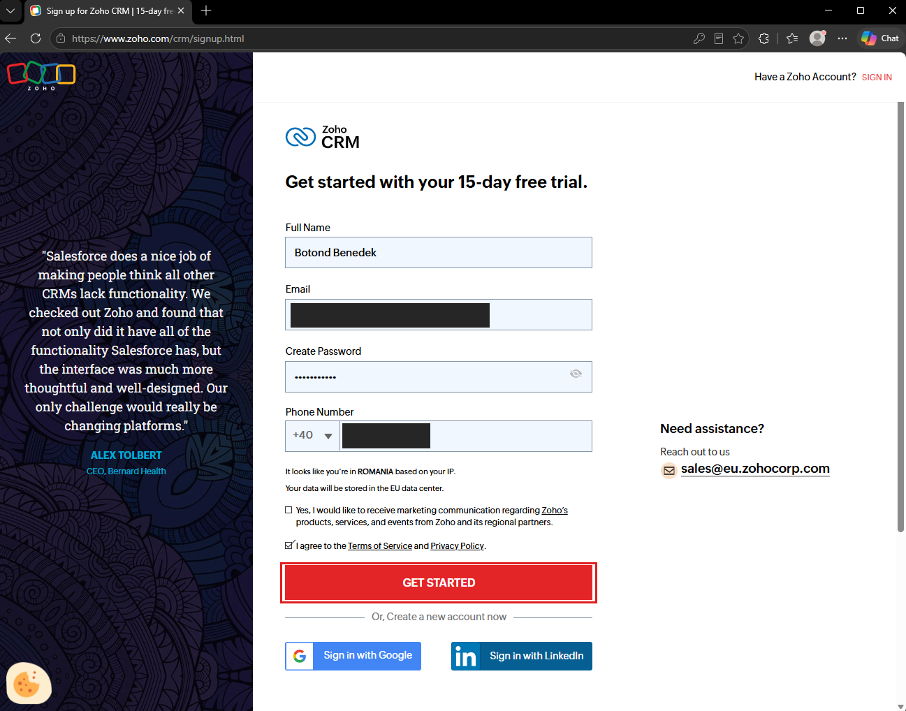
Google-fiókkal is lehetne regisztrálni (Sign in with Google), de a kurzusban az űrlapos utat követjük, mert így látod a teljes folyamatot. - A megadott telefonszámra SMS-ben érkezik egy egyszer használatos kód (OTP). Írd be az Enter OTP mezőbe, majd VERIFY. Ha a kód pár percen belül nem jön meg, a Change linkkel ellenőrizd a számot, és kérj újat.
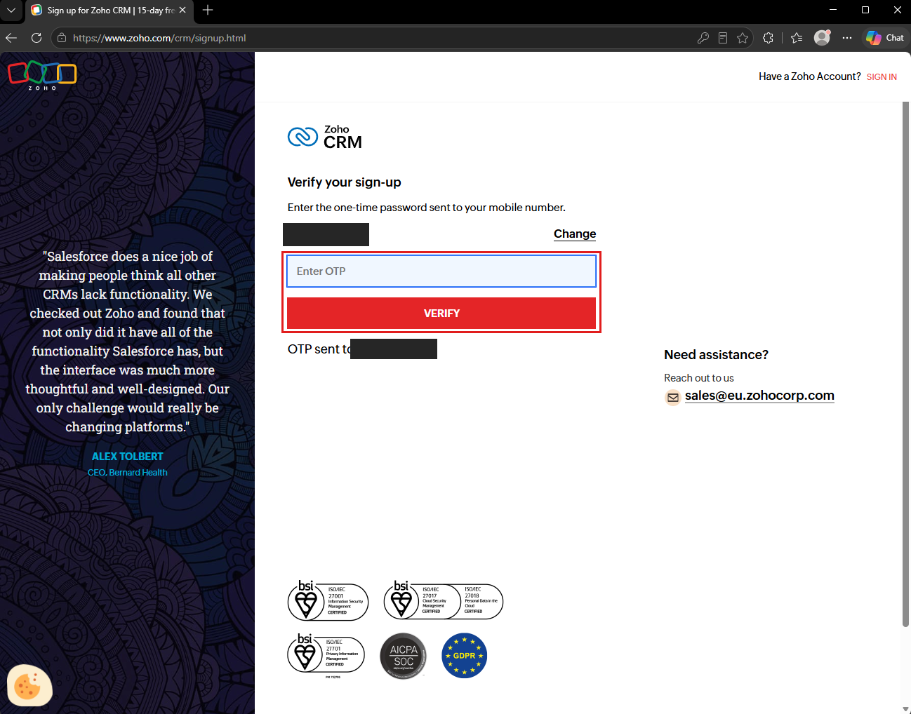
Az SMS-es ellenőrző képernyő: a keretben az OTP-mező és a VERIFY gomb - Közben az e-mail-fiókodba is érkezik egy levél a Zoho-tól. Nyisd meg, és kattints a CONFIRM YOUR ACCOUNT gombra: ez az e-mail-címed megerősítése, később (például a harmadik nap API-fejlesztői felületénél) is szükség lesz rá.
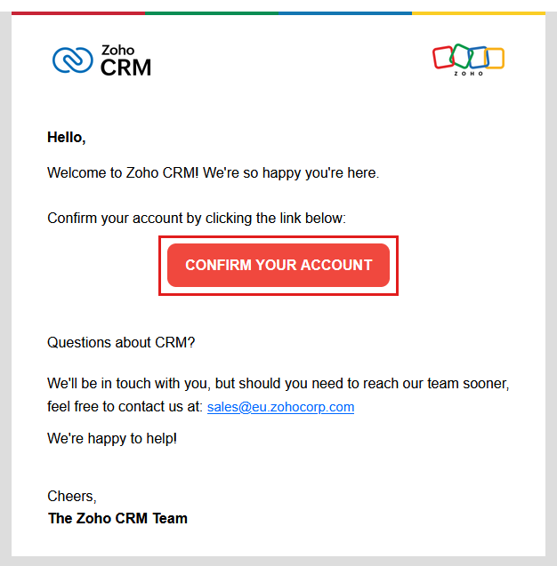
A megerősítő levél a CONFIRM YOUR ACCOUNT gombbal - A sikeres ellenőrzés után egyből a CRM-ben találod magad: a címsorban már
crm.zoho.euáll (ez az EU-s adatközpont címe). Egy Getting Started with Zoho CRM ablak fogad. A Company Name mezőbe írd: a vezetékneved + Learning Kft (például Kovacs Learning Kft; a képen példaként Transport Co szerepel). Az Employee Count-hoz egy kis szám is jó. Az időzónát, a nyelvet és a pénznemet hagyd, ahogy felajánlja. A Load Sample data pipa maradjon bekapcsolva: így a rendszer mintaadatokkal indul, és nem üres képernyőket látsz majd. Végül Get Started.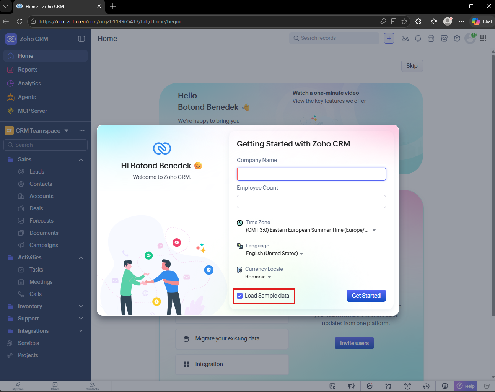
A Getting Started ablak; a piros keretben a bekapcsolva hagyandó Load Sample data pipa 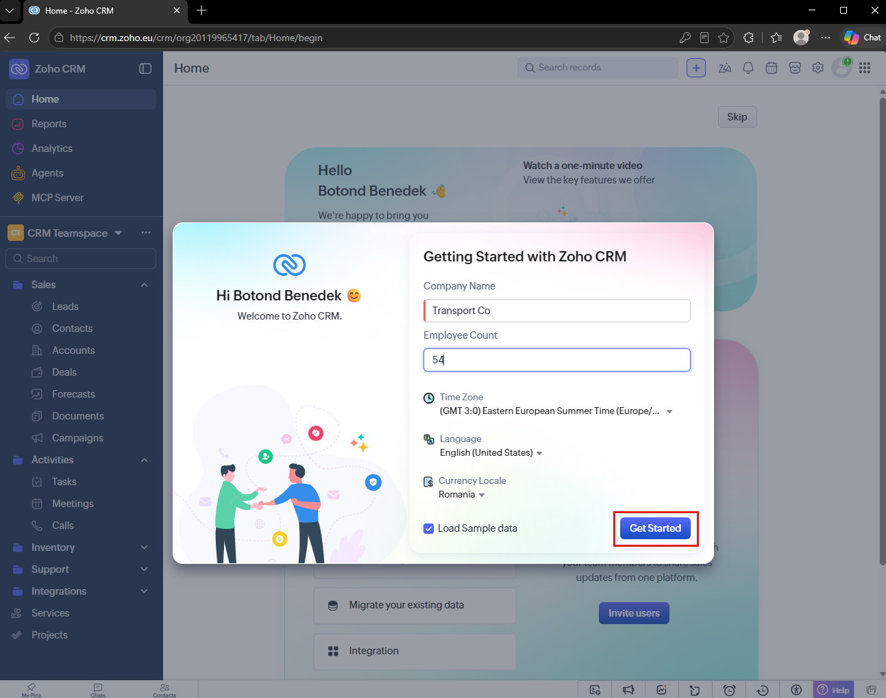
Kitöltve: cégnév és létszám; a Get Started gombbal zárod - A kezdőképernyő jobb alsó sarkában megjelenik a SAMPLE DATA POPULATION értesítés. Várd meg, amíg azt írja: Sample data added successfully (nagyjából fél perc). Utána a jobb felső Skip gombbal lépj túl az üdvözlő beállítás-listán (csapattag-meghívás, e-mail-bekötés): ezekre a kurzusban nem lesz szükség.
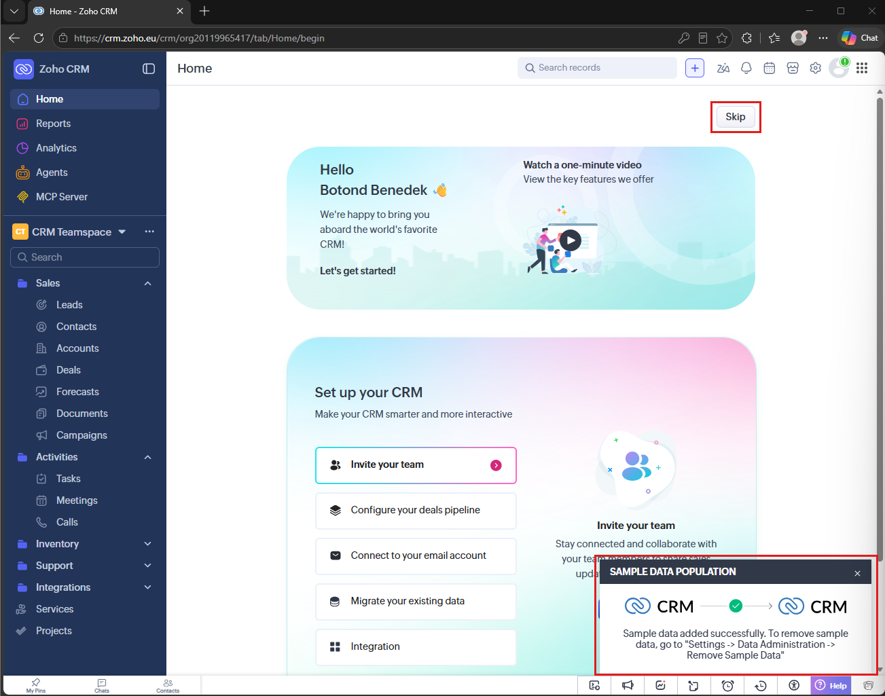
Az értesítés azt is elárulja, hol lehet a mintaadatokat később eltávolítani (Settings, Data Administration, Remove Sample Data). Most ne távolítsd el őket. - A Home irányítópulton a mintaadatok miatt nyitott értékesítési lehetőségeket, feladatokat és érdeklődőket látsz. A bal oldali Sales csoportban keresd a Leads (érdeklődők), Contacts (kapcsolattartók), Accounts (ügyfelek) és Deals (értékesítési lehetőségek) modulokat. Az Activities csoportban a feladatok, találkozók és hívások vannak.
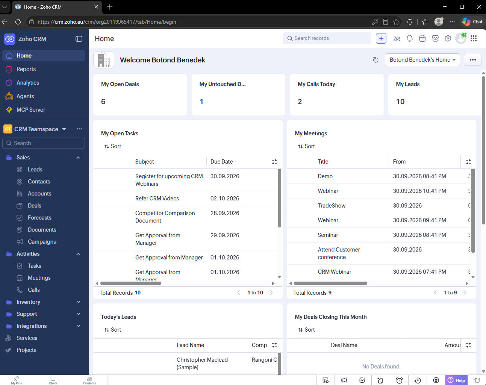
A Home irányítópult a mintaadatokkal; balra a modullista (Sales: Leads, Contacts, Accounts, Deals) - A regisztráció a fizetős kiadás 15 napos próbájával indul: ez normális, nem kell hozzá bankkártya, és lejáratkor a fiók magától a nem lejáró Free kiadásra vált, az adataid megmaradnak. A bemutatott alapműveletekhez a Free kiadás elegendő; a fiókodban ellenőrizd az elérhető funkciókat.
- Nyisd meg a bal oldali Leads modult. A mintarekordok neve mellett (Sample) jelzés szerepel. Ezeket hagyd meg; a következő gyakorlatban egy saját érdeklődőt hozol létre. A hatodik napon külön kampányjelöléssel töltöd be a saját partnerlistádat.
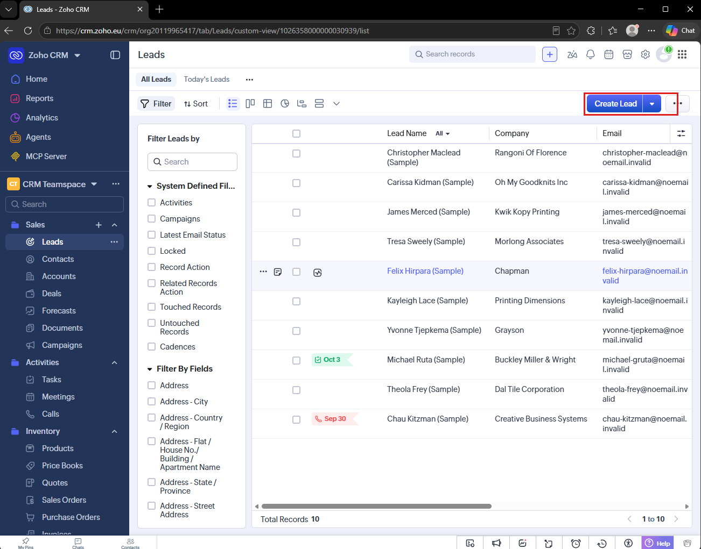
A Leads modul mintarekordjai és a Create Lead gomb.
A CRM legfontosabb fogalmai
| Modul | Mit jelent? | Példa | Kapcsolódó gyakorlat |
|---|---|---|---|
| Leads Érdeklődők | Potenciális ügyfél vagy kapcsolattartó, akinek az érdeklődését még vizsgáljuk. | Kiss Márta ajánlatot kér a Corner Shop Kft nevében. | Most kézi rögzítés; a harmadik napon API-hívás, a hatodik napon adatbetöltés, a nyolcadik napon robot. |
| Contacts Kapcsolattartók | Személyek, akikkel a vállalat kapcsolatot tart; egy ügyfélcéghez is kapcsolódhatnak. | Kiss Márta mint a Corner Shop Kft kapcsolattartója. | A harmadik napon az érdeklődő konvertálása. |
| Accounts Ügyfélcégek | Azok a vállalatok vagy szervezetek, amelyekhez személyek és értékesítési lehetőségek kapcsolódnak. | Corner Shop Kft. | A harmadik napon kézi létrehozás és konvertálás. |
| Deals Értékesítési lehetőségek | Konkrét értékesítési ügylet, amelynek összege, várható zárása és aktuális szakasza van. | Egy induló rendelés 4500 értékben, a CRM-ben beállított pénznemben. | A harmadik napon a lehetőség kezelése és a szakaszok megismerése. |
| Reports Kimutatások | A CRM adataiból készített összesítések; a funkciók a kiadástól függnek. | Az érdeklődők és értékesítési lehetőségek számának áttekintése. | Tájékozódás a rendszerben; egyedi riport készítése nem előfeltétele a beadandóknak. |
Sok CRM-ben találkozol ezekkel vagy hasonló fogalmakkal, de az elnevezések és a funkciók eltérhetnek. A kurzusban először megismered a rendszer kézi használatát, majd adatokat töltesz be importtal, API-val és robottal.
- A bal oldali Leads modulban kattints a jobb felső Create Lead gombra.
- Az alábbi példaadatok alapján töltsd ki az űrlapot. A Last Name a vezetéknév, a First Name a keresztnév; a két mezőt ne cseréld fel.
- A Lead Source legördülő listában válaszd a Phone értéket. Ha a mezőt nem látod, görgess lejjebb az űrlapon.
- Kattints a Save gombra, majd nyisd meg a mentett rekordot.
A Create Lead űrlapra írandó adatok
Kiss MártaCorner Shop Kft
- Last Name
- Kiss
- First Name
- Márta
- Company
- Corner Shop Kft
marta.kiss@cornershop.example- Phone
- +40 740 111 222
- Lead Source
- Phone
Ezek oktatási példaadatok. Ne küldj üzenetet vagy indíts hívást a rekordból. A harmadik napon ugyanezt az érdeklődőt alakítod kapcsolattartóvá.
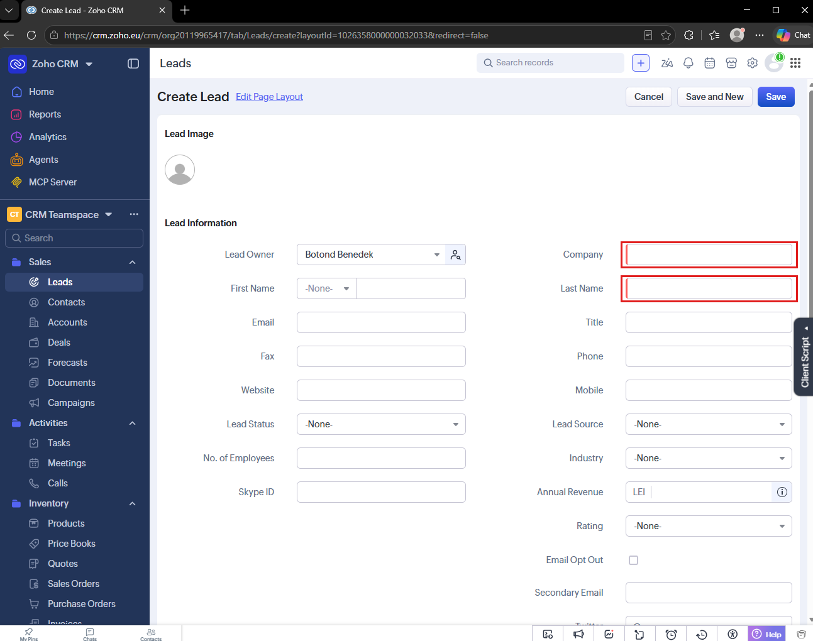
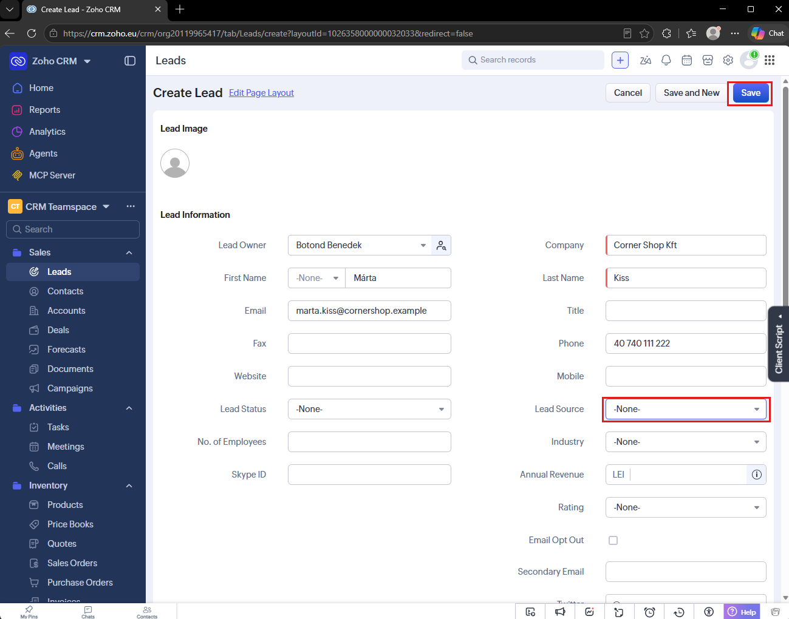

A Leads listában megtalálható a saját érdeklődőd. Az angol felület a nevet Márta Kiss sorrendben jelenítheti meg; ez ugyanaz a személy, mint Kiss Márta. A cégnév Corner Shop Kft.

Nyisd meg a rekordot, ellenőrizd a nevet, a céget és az e-mail-címet. A Timeline fülön követheted a létrehozást és a későbbi módosításokat.
Ha nem találod: állítsd a nézetet All Leads értékre, töröld a korábbi szűrőket, majd keresd a nevet. Ha mentéskor piros mezőjelzést látsz, töltsd ki a kötelező mezőt, és ments újra.
Miért az ingyenes kiadás, és mit tud?
| Kérdés | Válasz |
|---|---|
| Meddig ingyenes? | A Free kiadás nem jár le (3 felhasználóig); a félév végéig végig ezt használjuk. |
| Kell bankkártya? | Nem. |
| Mi hiányzik belőle? | A fejlett automatizálási és testreszabási funkciók egy része. A kurzus alapműveleteihez az ingyenes kiadást használjuk; API-hozzáférés is van, saját felhasználási korlátokkal. |
| Mi a trial? | A fizetős kiadások 15 napos próbája, amivel a fiók indul; lejáratkor magától Free-re vált, az adataid megmaradnak. |
- Más CRM-ekben, például a Salesforce, HubSpot vagy Dynamics rendszerben is hasonló ügyfélkapcsolati logikával találkozol; a modulnevek és az elérhető műveletek azonban eltérhetnek.
- A saját munkahelyeden: ha az ügyféllista ma Excelben él, pontosan az ilyen nyilvántartásokat szokták CRM-be szervezni; a hatodik napon megtanulod, hogyan.
- A Zoho CRM hivatalos súgója (modulok, import, beállítások): help.zoho.com/portal/en/kb/crm.
- A Zoho CRM API fejlesztői dokumentációja (a harmadik napon lesz érdekes): zoho.com/crm/developer/docs.